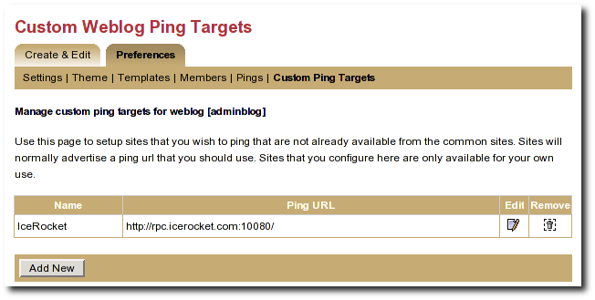
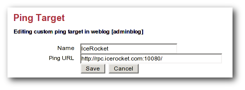
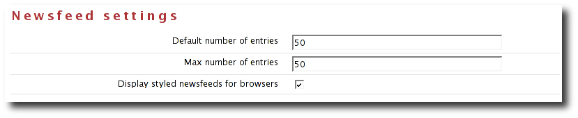

Table of Contents
1 - Introduction 5
2 - Getting started with Roller 5
2.1 - Getting started with a new Roller installation 5
2.2 - Getting started with an existing Roller installation 5
2.3 - Accepting an invitation to join a weblog 6
2.4 - Getting around in Roller 6
2.5 Changing the Language of the editor interface 8
3 - Creating and editing your weblog 9
3.1 - Creating and editing a weblog entries 10
3.2 - Finding and editing weblog entries 12
3.2.1 - Finding old entries with the Create & Edit:New Entry page 12
3.2.2 - Finding old entries with the Create & Edit:Entries page 13
3.2.3 - Finding old entries using the pages of your weblog 13
3.2.4 - Finding old entries with Roller's built-in search engine 14
3.3 - Weblog categories 14
3.3.1 - The Weblog Category Chooser 14
3.3.2 - RSS Feed for Each Category 14
3.3.3 - Adding, Renaming, and Removing Weblog Categories 14
3.4 - Using a blog client with Roller 15
3.5 - Podcasting with Roller 16
3.5.1 - How to create a podcast feed with Roller 16
4 - Working with comments and trackbacks 17
4.1 - Comment notification via email 17
4.2 - Comment management and moderation 17
4.3 - Preventing weblog spam 18
4.3.1 - Three levels of blacklisting 19
4.3.2 - How to add words and expressions to the blacklist 19
4.4 - Sending trackbacks 19
4.5 - Referrer rankings 20
5 - Managing your weblog settings 21
5.1 - Weblog settings 22
5.2 - Weblog themes 25
5.3 - Uploading Files 25
5.4 - Setting up a group blog 27
6 - Managing your weblog's blogroll 29
6.1 - Adding new links to your blogroll 29
6.2 - Adding new links to your blogroll 30
6.3 - Adding new bookmark folders 31
6.4 - Bookmark import and export via OPML 32
7 - Using weblog pings 33
7.1 - Registering with an Aggregator 33
7.2 - Ping Targets, Common and Custom 33
7.3 - Setting up Automated Pings 33
7.4 - Sending a Manual Ping 34
7.5 - Creating and Editing Custom Ping Targets 35
7.6 - More on Registering with an Aggregator 37
8 - Roller administration 38
8.1 - Managing users 38
8.2 - Configuring Roller 40
9 - Weblog update ping administration 43
9.1 - Creating and editing common ping targets 43
9.2 - How Roller Processes Weblog Update Pings 43
9.3 - Configuration Properties Controlling Ping Processing 44
9.4 - Suspending all ping processing 44
9.5 - Controlling and disabling ping usage 44
9.6 - Initialization of common ping targets 45
10 - Planet Roller administration 46
10.1 - Setting up the Planet aggregator 46
10.2 - Configuring Planet Roller 47
10.3 - Adding external weblogs to Planet Roller 48
10.4 - Adding custom groups to Planet Roller 49
10.5 - Using Planet Roller data in your weblog pages 50
Illustration Index
Illustration 1: Main Menu with invitation to join a group blog 6
Illustration 2: Status bar, no weblog 6
Illustration 3: Status bar within weblog 7
Illustration 4: Weblog navigation bar 7
Illustration 5: Weblog editor navbar 8
Illustration 6: Main menu 9
Illustration 7: Weblog editor 10
Illustration 8: Edit entries page 13
Illustration 9: Podcast URL field 16
Illustration 10Comment (and trackback) management page 18
Illustration 11: Send trackback control 20
Illustration 12: Result of sending trackback 20
Illustration 13: Weblog preferences menu 21
Illustration 14: Weblog settings page part 1 22
Illustration 15: Weblog settings page part 2 24
Illustration 16: Theme selection page 25
Illustration 17: Weblog permissions page 27
Illustration 18: Bookmarks management page 29
Illustration 19: Add and edit bookmark form 30
Illustration 20: Add folder form 31
Illustration 21: Automatic ping configuration page 34
Illustration 22: Custom ping targets page 36
Illustration 23: Edit ping target form 36
Illustration 24: User admin page 38
Illustration 25: User admin form 39
Illustration 26: Config page: site settings 40
Illustration 27: Config page: user settings 40
Illustration 28: Config: comments 41
Illustration 29: Config page: file upload settings 41
Illustration 30: Config page: newsfeed settings 42
Illustration 31: Common weblog ping targets 43
Illustration 32: Planet config page 47
Illustration 33: Planet subscriptions page 48
Illustration 34: Planet custom groups page 49
1 - Introduction
This user guide describes how to use Roller, a web application that can support a single user weblog, thousands of weblogs and/or group weblogs. You'll learn how to register as a new user, create weblogs, edit and post weblog entries and manage your weblog. You'll also learn how to customize your weblog's blogroll, a list of links to your favorite web sites,and how to change the look-and-feel or theme of your weblog.
A word about terminology is necessary because the word weblog is both a noun and a verb. In this guide we use the words weblog and weblog entry as follows:
Weblog: a weblog or blog is an online journal written by one or more authors. In Roller a weblog consists of weblog entries, weblog categories, favorite bookmarks and settings that define the appearance and behavior of the weblog.
Weblog entry: a weblog entry is an individual entry within a weblog with a title, date and text.
2 - Getting started with Roller
We'll start by explaining how to get started with a fresh Roller server, one that was just created and has no users at all. If you are using an existing Roller server, which has already been setup by somebody else, then you can skip to section 2.2 - Getting started with an existing Roller installation where we discuss how to register for an ordinary Roller user account.
2.1 - Getting started with a new Roller installation
If you've just installed a new Roller server, make sure that you create the first user yourself. Roller grants global admin permission to the very first user that is created. Later, you can use that admin user to grant global admin permission to other users. Here's how to create your first user:
How to create the first user and weblog on a fresh Roller site:
Start Roller and navigate to the main page (e.g. http://localhost:8080/roller).
Click the Register link in the top right corner of the page.
Fill out the information for your new user, perhaps using the username 'admin' since the first user is the admin user. Once you've filled out the form. click the Register User button.
On the Welcome to Roller page, choose the Click here link to login as your new user. You'll be taken to the Roller Main Menu page.
On the Main Menu page, click the create a weblog link to create a new weblog.
Fill out the Create Weblog page and when you're done click the Create Weblog button.
2.2 - Getting started with an existing Roller installation
To get started on an existing Roller installation, first you need to create a user account. Once you've done that, you can create one or more weblogs for your user.
How to create a user account
Some Roller sites require you to use a separate system to create a Roller account. For example, at Sun we require blogs.sun.com bloggers to register using an internal system called BAM.
With a stock Roller installation, here's how you register a new user:
Use your web browser to go to the main page of the Roller installation
Click the Register link in the top right corner of the page
Fill out the information for your new user. Once you've filled out the form. click the Register User button.
On the Welcome to Roller page, choose the Click here link to login as your new user. You'll be taken to the Roller Main Menu page.
How to create a weblog for your user
Here's how you create a new Roller weblog for your user:
Login to Roller by clicking the Login or the Main Menu link
On the Main Menu page, click the create a weblog link to create a new weblog.
Fill out the Create Weblog page and when you're done click the Create Weblog button.
2.3 - Accepting an invitation to join a weblog
Roller supports group blogging. That means that more than one user can edit and manage a single weblog. If somebody invites you to join their weblog, an invitation message will appear at the top of the Main Menu page. Depending on how Roller is configured, you may also get an email message that informs you of the invitation. To accept an invitation, login to Roller go to the Main Menu page and you'll see something like this.
Illustration
1: Main Menu with invitation to join a group blog
That's an invitation to join the weblog with the handle 'adminblog'. To accept click the accept button. Once you do, you'll be a member of the weblog and the weblog will appear on your Main Menu page as one of your weblogs.
2.4 - Getting around in Roller
When you log into Roller, Roller sends you to the Roller editor interface -- a set of web pages for editing and managing your weblog and (if you have global admin privileges) the Roller installation itself.
Find your way around the editor interface
No matter where you go in the Roller editor interface, you'll always see a status bar across the top of the page with convenient links to the Roller front page and main menu.

Illustration
2: Status bar, no weblog
That's what the status bar looks like when you are logged in (assuming your username is 'admin'), but you haven't chosen a specific weblog in which to work. What's going on here?
The text on the left indicates that you are logged in as user admin.
On the right, the words Front Page link to the front page of the Roller site. Your site's administrator may have changed the words Front Page to something else, but the link should still take you to the site's front page.
Also on the right, the words Main Menu link to the main menu of Roller, where you can manage your weblog(s), create new weblogs and accept invitations to join other user's weblogs.
If you are logged into Roller and you are editing one specific weblog, the status bar will include a link to that weblog. For example, the bar below indicates that user 'admin' is logged-in and editing weblog called 'adminblog.'

Illustration
3: Status bar within weblog
Going from your weblog back to the editor interface
When you're on your weblog page and you need a way to get back to the Roller editor interface, look for the weblog navbar. All of Roller's built-in themes include the navbar. It looks slightly different in each theme, but it always includes the same set of links.

Illustration
4: Weblog navigation bar
That's what weblog navbar looks like this when you are not logged in (note that the exact appearance varies in each theme). The words Front Page link to the front page of the Roller installation and as with the front page link in the banner-status bar, the words may be different on your site. Next are links to the public pages of the weblog, and this particular weblog includes pages called Weblog and About. Finally, there is a link to Login.

Illustration
5: Weblog editor navbar
That's what weblog navbar looks like this when you are are logged in. After the familiar Front Page link and the page links there's a link to the weblog's New Entry page, the weblog's Settings page and a Logout link.
After the logout link is the editor navbar, which includes shortcuts to all of the editor pages for this particular weblog. It is also included on all of the built-in Roller themes, but is a separate component from the plain old weblog navbar.
Now that we've covered the basics of registering a new user, creating a new weblog and finding your way around let's start blogging.
2.5 Changing the Language of the editor interface
The Roller editor interface uses the locale (language and country) User Profile setting to select the text to display in the editor navbar and in each editor page. You can select your preferred locale when registering or, if you have already registered, on the Your Profile page. If a translation for your preferred language is available on your Roller installation, the editor interface will use this language for all the editor pages. If you have selected your preferred language and the pages are still displayed in English (or the default language of your Roller installation?) there may not be a translation available for your language. (If you or the person(s) responsible for your Roller installation would like to translate Roller to an additional language, please visit the Roller project website...) (Translations are currently available for...)
3 - Creating and editing your weblog
First, you login to Roller. What happens next depends on the number of weblogs that you have. If you have one weblog, you'll be taken directly to the New Entry page for that weblog. If you have more than one weblog or none at all, then you'll be taken to the Main Menu page, shown below, so you can pick which weblog to edit and/or create new weblogs.

Illustration
6: Main menu
The main menu page lists all of your weblogs and for each, shows you links to its New Entry, Edit Entries and Settings pages. You can also create a new weblog, edit your user profile and perform administrative duties (if you have global admin permissions).
3.1 - Creating and editing a weblog entries
To create a new weblog entry, go to your weblog's New Entry page, enter a title in the Title field, enter the your post in the Content text area, choose a category from the Category combo, and hit the Post to Weblog button. As soon as you do that, your weblog entry is posted to your weblog for the world to see. Here is the relevant part of the New Entry page.
Illustration 7:
Weblog editor
The above screenshow shows the RTE weblog entry editor (editor-rte.jsp), a rich text editor that creates the HTML for you. If you prefer to edit the HTML yourself, you can switch to the plain text editor (editor-text.jsp). Use the Preferences:Settings page to pick the weblog editor page you'd like to use.
Let's cover the fields on the page:
Title: this is the title for your post, it is required.
Category: You must pick a category for your entry. You can change the list of categories available in your weblog by using the Create & Edit:Categories page.
Pub Time: You don't need to set this unless you want to post at a specific time in the past or in the future. The best thing to do is to leave it blank. Roller will set it for you when you click the Post to Weblog button to publish your new weblog entry.
Status: This field displays the status of your weblog entry. The possible values are Not saved, Draft and Published.
Summary (optional): For long posts, you might want to enter a sentence or two as summary in addition to the content. If you do, your short summary will appear on the front page of your weblog and the content will appear on the single-entry view. Your summary will also be included in your newsfeed in an <atom:summary> element.
Content: This is where you put the body of your weblog entry.
Below the weblog entry fields are the Other Settings
Comment Settings: Click on the little plus-sign plus (+) to expand the Comment Settings control, where you can enable/disable comments on your blog entry.
Plugins to Apply: This control allows you to pick which plugins are to be applied to this entry. For example, if you want ;-) smilies in your text to be replaced with smiley-face images, choose the emoticons plugin. You can set which plugins are to be applied by default on your weblog's Preferences:Settings page. Note that your Roller site administator controls the list of available plugins. Here's the current list of plugins included in Roller:
Convert Line Breaks
Topic Tags
Textile Formatter
Acronyms
Bookmark Linker
Email Scrambler
Emoticons
Misc settings: Here you can control misc. settings like text right-to-left and, if you're an administaror, you can "pin" an entry to the top of the front-page of the site.
MediaCast settings: This control allows you to specify the URL of a file to be included in your blog entry as an RSS enclosure, also known as a podcast. See the next section for more information on podcasting with Roller.
Below that is a row of buttons.
Post To Weblog: Don't click this button until ABSOLUTELY SURE you're ready to publish your weblog entry for the entire world to see.
Submit for Review: If you only have limited blogger rights in the weblog, you won' t see the Post to Weblog button because limited bloggers are not allowed to publish directly. Instead, you'll see a Submit for Review button. Click this button when you are ready for the authors of the blog you are working in to review your work and either publish or save it as a draft and ask you to revise it.
Save as Draft: Click this button to save your post as a draft entry for editing later.
Preview: Click this button to see what your post will look like when displayed in a browser. Not that preview is not exactly like what you'll see because you weblog may have different font and style settings than the edit weblog page, but it will be pretty close.
3.2 - Finding and editing weblog entries
All of your blog entries are saved in a database. Once your blog entries scroll off the front page or off the recent entries list of the Create & Edit:New Entry page, they are still available to your readers on your weblog pages. They're available to you too.
3.2.1 - Finding old entries with the Create & Edit:New Entry page
If you go to the Create & Edit:New Entry page, you'll see on the right a list of recent Pending Entries, Draft Entries, and Recent Entries. You can edit any of these by simply clicking on title.
Pending Entries are entries created by limited bloggers who are not allowed to publish directly to the web. If you have author or admin permission in the blog you can edit and publish these entries.
Draft Entries are entries that are not yet visible on the web becuase you, or somebody else in your weblog is not yet done editing them. You can edit any draft entries in your weblog.
Recent Entries are entries that have been published to the web. If you have author or admin permission in the blog you can edit and re-publish these entries.
Illustration 8: Edit
entries page
3.2.2 - Finding old entries with the Create & Edit:Entries page
You can use the Create & Edit:Entries to find and edit your old posts. That includes posts that have scrolled-off the bottom of the Pending, Draft and Recent Entries lists we discussed above. When you first arrive on the page it will show you most recent entries, as shown in the screenshot below. If you want to find an old post you can use the start and end date calendars to look for posts in a specific time period. You can edit any of the entries in the Weblog Entries list by simply clicking on its title.
3.2.3 - Finding old entries using the pages of your weblog
You can also use the pages of your weblog to navigate into the past and find old blog entries. If you do this when you are logged in, then you'll see an Edit link on each weblog entry, which will load that entry into the weblog editor (i.e. the New Entry page).
There are several ways to do this:
Using the calendar: most weblog themes include a calendar, which you can use to navigate back and forwards in time.
Using the next/prev links: most weblog themes include next/previous links, which allow you to navigate back and forwards in time.
Using URLs: you can also use URL's to navigate back in time. Roller URLs take the form /page/username and /page/username/date where date is formatted YYYYMMDD. So, you can navigate into the past by using URLs.
3.2.4 - Finding old entries with Roller's built-in search engine
Roller also has a built in search engine, which you can use to search for entries in the entire site, or in just your blog. If you're logged in, when you find one of your old entries, it will have an Edit link.
3.3 - Weblog categories
Roller's weblog categories feature allows you to organize your weblog posts by category. For example, you might setup a category called "Family" for your family related posts, a category called "Music" for your music posts, and a category called "Misc" for everything else.
When you write a new weblog post you must decide which category to place it in. On the Create & Edit:New Entry page, there is a combo-box that allows you to pick a category for your post or to change the category when you edit an old post. Currently, Roller only allows you to assign each weblog post to one category.
3.3.1 - The Weblog Category Chooser
When a user views your site, they can choose which category to view. All of the stock Roller weblog templates include the #showWeblogCategoriesList() close to the top of the page so that your readers can pick which category to display or "All" for all categories of posts.
3.3.2 - RSS Feed for Each Category
Your weblog's main RSS newsfeed includes all categories, but users can choose to subscribe to specific categories. Most of the stock Roller weblog templates display a list of your RSS feeds, one for all categories and one for each separate category.
3.3.3 - Adding, Renaming, and Removing Weblog Categories
You can change the names of your categories, add new categories, and delete categories using the Create & Edit:Categories page of the Roller Editor UI.
3.4 - Using a blog client with Roller
A blog client allows you to post to Roller remotely, from your desktop or from some other web site. For example, desktop applications such as Ecto and MarsEdit can post to Roller and so can the photo-sharing web site Flickr.com. This is possible because Roller supports the standard Blogger and MetaWeblog APIs.
Configuring a blog client for use with Roller
First, make sure to enable Blogger API support in your weblog via the Preferences:Settings page. Next, start your blogging client, find the preferences or account setup dialog. You'll need to set the following parameters:
Username: your Roller username
Password: your Roller password
BlogID: the handle of your Roller weblog
URL: the URL of Roller's XML-RPC endpoint
Note that you may not need to enter your BlogID because some blog clients will login to Roller and then present you with a list of the weblogs that are available to your user.
A blogs.sun.com example
For example, if you have an account on blogs.sun.com, your username is fred and your blog's handle is fredsblog (i.e. your weblog's URL is http://blogs.sun.com/fredsblog), then your paramrters would be:
Username: fred
Password: (your password)
BlogID: fredsblog
URL: http://blogs.sun.com/roller-services/xmlrpc
You may not need to enter your BlogID because some blog clients will login to Roller and then present you with a list of the weblogs that are available to your user.
A jroller.com example
If you have an account on jroller.com, your username is fred and your blog's handle is fredsblog (i.e. your weblog's URL is http://jroller.com/fredsblog), then your paramters would be:
Username: fred
Password: (your password)
BlogID: fredsblog
URL: http://jroller.com/roller-services/xmlrpc
3.5 - Podcasting with Roller
Roller now includes support for podcasting,
a way to distribute files through your weblog's newsfeed.
Typically, folks use Podcasting to distribute audio files, but the
technique can be used to distribute any type of file. Specialized
Podcast client software (such as iPodderX )
downloads the audio files that are referenced in your newsfeed and
copies them to an music player, such as an MP3 player.
)
downloads the audio files that are referenced in your newsfeed and
copies them to an music player, such as an MP3 player.
3.5.1 - How to create a podcast feed with Roller
In Roller a Podcast is like an attachment to a weblog entry. We call it mediacasting in the Roller UI because it can be any type of file and is not necessarily destined for play on an Apple iPod. Here are the steps involved in Podcasting with Roller:
Record an interesting Podcast (that's the hard part, by the way)
Save your Podcast in MP3 format (or whatever you prefer).
Upload your Podcast to a web server somewhere and take note of your Podcast's URL. If you have the space for it and your Roller admin allows MP3 files, you can use file-upload capability to upload it to your Roller website. Chose the Create & Edit: File Uploads menu item to get to Roller's file-upload page. For example, if Nina of example.com were to upload a file to Roller, then the URL would look something like this:
http://example.com/roller/nina/resource/mycast.mp3
Create a new Roller Weblog entry via Create & Edit:New Entry describing your new Podcast. You might want to provide a link to it so that those without a Podcast client can click to download it directly. Using Nina as an example again, she would add the following HTML to her blog entry to provide a link to her Podcast:
Hey now! I just created my first Podcast you can download it here: <a href="http://example.com/roller/nina/resource/mycast.mp3">mycast.mp3</a>
And the most important step: in the lower-half of the Edit Weblog page, you'll see an expandable control labelled +MediaCast Settings. Click on that to expand the MediaCast control and paste into the URL field the URL of your Podcast.
Once your blog post is ready, save it as a draft or publish it. Once you've done that you'll see that the MediaCast Settings control has the content-type and file-size of your Podcast. If not, then Roller could not access your Podcast due to network problems or perhaps a bad URL. Make sure the URL is correct and save again. If your Podcast is OK, you'll see something like this:

Illustration
9: Podcast URL field
Roller will add the Podcast to your RSS newsfeed as an <enclosure>. You can check this by looking at your RSS newsfeed. Go to your weblog and click the orange XML icon, or just enter your newsfeed URL into your browser. After you download your newsfeed file, open it with your favorite text editor and in the most recent entry you'll see an RSS enclosure. For example, Nina would see the following enclosure in her newsfeed:
<enclosure url="http://example.com/roller/nina/resource/mycast.mp3" type="audio/x-mpeg" length="3409127" />
That's all there is to podcasting with Roller.
4 - Working with comments and trackbacks
Roller supports weblog comments and trackbacks, which provide a way for other bloggers to add comments to your blog remotely. By default comments and trackbacks are enabled, but you can turn them off on your weblog's Preferences:Settings page of your weblog. Note that turning off comments, disables both comments and trackbacks.
4.1 - Comment notification via email
If you're going to leave comments turn on then take the time to read them, to respond where appropriate and, when you receive spam or other forms of offensive comments, delete them from your weblog. You can't respond to comments if you don't know when you get one, so make sure you enable email notification of comments. You can do that on the Preferences:Settings page.
If you've got email turned on then you'll receive an email every time you get a new comment and the email will include the text of the comment, a link to the entry that was commented upon and a link to the comment management page, shown below, where you may choose to approve, mark as spam or even delete the new comment.
4.2 - Comment management and moderation
If you'd like to preview and approve comments before they are displayed on your weblog, then you'll want to turn on comment moderation via Preferences:Settings. When comment moderation is enabled, then each new comment will be marked as pending and unapproved and will not appear on your weblog. To check for new comments, go to the Create & Edit:Comments to check for and either approve or delete new comments. If you've got comment notification enabled, make sure you also enable comment notification so you'll know when new comments arrive. To moderate comments, use the comment management page, described below.
The comment management page
The comment management page, shown in illustration 10, allows you to manage comments for your weblog. If you arrive on the page from the link in a comment notification email, then you'll see only the comments for the one entry that was commented upon. If you arrive via the menu, you'll see all recent comments in reverse chronological order.
Comments that are suspected to be spam are shown with a light red background, with the spam check-box checked. Comments that are new and pending your review are shown with a light yellow background.
How to moderate comments
Review each new comment and decide if it is to be approved for display, marked as spam and hidden or deleted entirely.
Only comments that are marked as approved and are not spam will be displayed on your weblog. So set (or unset) the corresponding checkboxes for each comment, or leave them the way they are.
When you are done. Click the save changes button at the bottom of the page. You'll see that comments that were pending are no longer pending and those that you marked for delete will be gone.
How to search weblog comments
You can also use the comment management page to search for comments across all entries in your weblog by keyword, status and date. Use the Filter comments area of the page to set the fields you want to search and click the Query button. If there are more comments than can be displayed on one page, then a next page link will be displayed at the top of the list of comments so that you can navigate into the past.
Illustration
10Comment (and trackback) management page
Global comment management
If your user has global adminstration privileges, then you can manage comments across the entire Roller site, including every weblog. To do this, go to the Server Adminstation:Comments page and you'll see a page that is almost identical to the weblog-specific comment management page.
Limitations of global comment management
You can use this page to mark as spam or delete any comment in the system, however you cannot change the approval status of comments through this interface. Approving comments for display is the duty and responsibility of the individual webloggers, so comment approval is only available in the context of a weblog.
A word about receiving trackbacks
Incoming trackbacks are treated differently, depending on how your Roller site is setup. Your site adminstrator may choose to disable incoming trackbacks entirely. In that case, anybody who tries to send a comment to your weblog via trackback will receive and error messae and no comment will be added.
Your site administrator may choose to enable a spam prevention measure known as trackback verification. If that's the case, then each incoming trackback will be verified. If the weblog that sent you the trackback does not link to your weblog entry, then that trackback will be marked as un-approved and pending. You'll have to visit the comment management page to approve that trackback before it is displayed as a comment on your weblog.
4.3 - Preventing weblog spam
There are three forms of comment spam that can affect your weblog:
Comment spam: spam that arrives via the comment form on your weblog. Sometimes spam comments are added by a human and sometimes by a computer program known as a spambot.
Trackback spam: spam that arrives via trackbacks sent by a spambot.
Referrer spam: spam that arrives in web requests and appears on the Create & Edit:Referrers page of your Roller blog or on your blog (but only if your blog theme uses the #showReferrers() macro).
Fortunately, there are counter-measures for each type of spam. For comment and trackback spam, you can use email notification of comments, comment moderation and trackback verification (described in the previous section) to manage spam. That's not all. Roller also includes a blacklisting feature, which can be used to fight all three forms of spam.
4.3.1 - Three levels of blacklisting
Roller uses a blacklist, a lists of words which are used to check incoming comments, trackbacks and referrers for spam. The blacklist includes several thousand words and regular expressions which which are used to check incoming comments and trackbacks. If the name, URL or content of a comment or trackback includes one of the blacklist words or matches one of the expressons then that comment or trackback is marked as spam and is not displayed on your weblog, unless you use the comment management page to unmark it.
Actually, there are three levels of blacklist:
Level 1 blacklist: This is the built-in blacklist, the one that comes with Roller. This can only be changed by somebody with root access to the Roller server itself.
Level 2 blacklist: This is the site wide blacklist, which can only be edited by a global administrator via the Server Admin:Configuration page.
Level 3 blacklist: Weblog specific blacklist, which you control in the Preferences:Settings page of your weblog.
Incoming comments and trackbacks are checked against all three levels of blacklist. Incoming referrers, however, are only checked against the levels 2 and 3 blacklist.
4.3.2 - How to add words and expressions to the blacklist
If you have a spam problem on your weblog and you'd like to add words to the blacklist, it's probably better for you to ask your administrator to add the words to the level 2 blacklist for you. That way, every blogger on the site will benefit from the addition. If you must do it yourself, here's how you do it:
Go to the Preferences:Settings page and scroll down to the blacklist fields
Enter your spam words, one per line
Lines that begin with a left parenthesis will be treated as regular expressions (see the Java API documentation for javax.util.regex.Pattern for a guide to regular expressions). Don't try to use a regular expression unless you really know what you're doing.
4.4 - Sending trackbacks
If you are writing about something you read on another weblog, you want to let the author and readers of that weblog know that you are doing so, and that other weblog is trackback enabled, then you should send that weblog a trackback ping. Here's a story that illustrates how trackback works:
You read an interesting blog entry on Otto's blog. You notice that Otto's blog entry has a trackback URL, so instead of leaving a comment on Otto's blog you decide to comment by writing a blog entry in your own blog. You copy that trackback URL (using ALT-C, or right-click-copy, or whatever) cause you'll need it later.
You go to your blog and write a new blog entry in response to Otto's entry. Click the Post to Weblog button to publish your new entry. After you publish, scroll down on the New Entry page until you see the following text field and button:

Illustration
11: Send trackback control
Enter the trackback URL from Otto's blog entry into the text field and click the Send Trackback button. Roller will respond by printing the response received from Otto's blog server. If the trackback was successful, you should see something like this:

Illustration
12: Result of sending trackback
You should now see your trackback listed among the comments on Otto's blog entry.
4.5 - Referrer rankings
The Weblog:Referrer referrer rankings page shows the hits that are coming in from other websites and weblogs that have links to your weblog and to specific entries in your weblog. By looking at your referrer logs, you can get an idea of who is reading and commenting on your weblog.
5 - Managing your weblog settings
As a Roller user, you are free to customize the look-and-feel of your weblog as you wish. When you establish your Roller user account, you can choose one of the dozen or so stock themes for your website. Later, you can use the theme switcher to switch to a different theme. Or, if you know something about HTML and CSS you can customize the look-and-feel and layout of your weblog yourself by modifying the page templates that make up your site and by adding new pages. Best of all, you can do all of this through the web-based Roller Editor UI.
To manage your weblog, use the Preferences menu. You can get there from the Main Menu page, by clicking the Settings link for your blog. Or, if you're already editing your weblog, you can just click on the Preferences menu in the tabs. Once you're there, the tabbed menu should look like this:

Illustration
13: Weblog preferences menu
In the rest of this section we'll cover each of the items on the Preferences menu.
5.1 - Weblog settings
The Preferences:Settings page allows you to set the configuration parameters for your weblog. The page is large, so we've split it into two screen-shots. Here's the first one.
Illustration 14:
Weblog settings page part 1
Here is an explanation of each of the settings on the weblog Preferences:Settings page:
General settings
Title - The title of your weblog may include HTML, but the HTML will be stripped out in your RSS feed. You can access your title in a page template with the expression #showWebsiteTitle()
Description - The description of your weblog may include HTML, but the HTML will be stripped out in your RSS feed. You can access your description in a page template with the expression #showWebsiteDescription().
Email address of weblog owner: Enter the email address that you would like people to use to contact the person in charge of your blog; usually that's you. To thwart spammers, your email address will be obfuscated when displayed on your blog. Please enter a valid address, otherwise Roller's email features will not work.
Weblog editor page to be used - Choose a weblog editor page, some are rich-text editors:
editor-text.jsp: Simple text editor, you must enter HTML
editor-rte.jsp: Rich text editor (works in Firefox and IE but not Safari)
Weblog is active: un-check this box to indicate that your weblog is no longer active and should not appear in hot-blog and other weblog listing on the site. You might want to do this if you take a very long vacation or if you have decided to stop updating your weblog for some other reason.
Number of entries to display on weblog: Enter the maximum number of entries to be displayed on your weblog.
Internationalization Settings
I publish my weblog in multiple languages: check this box if you blog in multiple languages and would like to specify a language locale for each of your weblog entries.
Show my weblog entries from all languages on my home page: check this box if you'd like your weblog's main page to show your posts in all languages. If you don't check it, then readers will only see weblog entries from your default locale.
Locale set the default locale for your weblog.
Timezone: the timezone to be used in your weblog.
Comments
Allow comments for your weblog? – Check this box to allow visitors to leave comments on your weblog.
Moderate comments – Check this box to enable comment moderation (i.e. you must approve each comment before it is displayed).
Email comments – Check this box to receive an email notification of each new comments.
Default from e-mail address for comments – This will be used as the from address in comment emails sent by Roller.
Default comment settings
By default, allow comments for new entries – Check this box to enable comments on your weblog. You can also control comments on each individual weblog entry.
Default time to allow comments for new entries – Choose the default amount of time to allow comments for new blog entries. This setting may also be overridden using the Comment Settings section of the New Entry page.
Apply comment defaults to all existing entries? - If you check this box, when you click the Save button the comment defaults you have set will be applied to all existing comments.
Settings on the weblog Preferences:Settings page (continued):
Weblog client API
Enable Blogger API for your weblog - Set to true to enable weblogging via the Blogger API. This will allow you to use handy blogging clients like w.bloggar to post to your weblog.
Category for posts received via Blogger API - Choose the category for incoming posts made via the Blogger API. This only applies if you blogging client does not support categories.
Formatting
Default entry formatters: this is the list of plug-ins to be enabled by default on a new weblog entry.
Spam pevention
Ignore incoming referrer URLs that contain any of these (comma-separated) words - you can use this to filter out what referrers are accepted. Somewhat useful if you start getting hit by referrer spam, but not a complete solution to the referrer spam problem. See section for more information on spam prevention.
Illustration 15:
Weblog settings page part 2
5.2 - Weblog themes
A weblog theme is a set of templates, style-sheets and image that determine how your weblog will be displayed. A theme can define both the layout and color-scheme of your weblog. When you start a Roller weblog, you choose from one of the built-in themes. You can change your weblog's theme at any time by going to the Preferences:Theme page, show below.

Illustration
16: Theme selection page
You can also choose to customize your theme. If you click the Customize button the templates that define your current theme will be copied into your blog where you can edit theme. See the Template Authors Guide for complete documentation on customizing your weblog's theme.
WARNING: if you have customized your theme, then watch out. Switching themes using the Preferences:Theme page will destroy the custom changes you've made.
5.3 - Uploading Files
Roller includes a file-upload feature that allows you to upload images and other files for use in your weblog.
Here are the steps to upload an image to Roller and to use it in a blog entry:
Upload the file: Use the Ceate & Edit:File Uploads page to upload your image file. Once it is loaded, locate it in the list of file uploads, right-click on it and copy the link.
Create a weblog entry: Use the Create & Edit:New Entry page to add or edit a weblog entry.
Include the image: Place an HTML <img> tag where you want the image in your blog entry.
If you don't know HTML, you might need help with that last step. Here is what an <img> tag looks like.
<img src="http://jroller.com/resources/mrroller/leo.gif" alt="one happy baby" />
You need to include the src attribute and it's also good form to include an alt attribute that describes the image (for those who cannot see the image).
5.4 - Setting up a group blog
To create a group blog, create a new weblog or log into an existing weblog that you'd like members to contribute to. Creating a weblog for group blogging is the same a creating a personal weblog (see section [3] for instructions). Navigate to the Members menu item in the Preferences tab. The Preferences:Members page enables weblog admins to invite members to a group blog and manage the group blog user access.

Illustration
17: Weblog permissions page
You can use the Invite new member link to invite any Roller user to join you weblog, but before you do you should understand the three different permission levels allowed for members of a weblog. They are:
Admin: an admin can create/edit weblog entries and publish them to the web. They can also manage the weblog by changing the theme, editing the page templates that define the look of the blog, and managing the users of the blog. Roller will grant you admin rights in any weblog you create. Admin users can see both the Create & Edit tab and the Preferences tab of Roller.
Author: author permission allows users to create entries, edit entries and upload files. But authors cannot change weblog settings, modify the theme or manage users. Authors can see the weblog Create & Edit tab, but not the weblog Preferences tab.
Limited: limited bloggers can create and edit blog entries and save them as drafts, but cannot publish them to the web.
Select Invite new member from the right navigation to invite Admins, Authors, and Limited authors to join the group blog. You'll need to know the users individual blog username to find them in the list of users. You may scroll through the list, but it's best to begin typing their username to locate them. Set the users Permissions by selecting Admin, Author, or Limited. Click on Send Invitation. If roller is not configured to talk to the mail server, you may get the following messages:
User successfully invited. ERROR: Notification email(s) not sent, due to Roller configuration
or mail server problem.
As long as the first message is present, the invite is successful. The next time the user logs into the blog site, they will see the following: on the Main Menu page:
You are invited to join weblog [weblog name will appear here] – accept | decline
Once a user is a member of your blog, you can change their permissions. Just click the appropriate radio button in the table and click the Save button. You can also remove users from the site, but note that you cannot reduce your own permissions or remove youself from the weblog.
Accept or Decline a Group Blog Invitation
If you are invited to become a member of a group blog, an invitiation will be present at the top of the Main Menu page. Example:
You have one or more invitations to accept or decline: You are invited to join weblog [sputnik] – accept | decline You are invited to join weblog [dotSunNews] - accept | decline
Click 'accept' to become a member of the group blog or 'decline' to turn down the invitation.
Contribute to a group blog
Once you're a member of a group blog, contributing is as easy as creating blog entry content. To access the group blog, login, from the Main Menu navigate to the group blog you'd like to contribute to and select any of the following: New Entry, Edit Entries, Settings (weblog admins only).
For users who participate in multiple weblogs it is important to note that the Main Menu page is how you switch between the various weblogs you can author to. The Main Menu will always show you what weblogs you are participating in and what privilages you have on each weblog.
Resign from a Group Blog
To resign from a group blog, login, on the Main Menu page, navigate to the blog information for which you wish to resign. Select 'Resign'.
6 - Managing your weblog's blogroll
Roller makes it easy to maintain a blogroll, that is, a list of your favorite weblogs and web sites that is displayed in the sidebar of your weblog.
6.1 - Adding new links to your blogroll
Individual blogroll items are known as bookmarks. Use the Create & Edit:Bookmarks page to add, edit and delete bookmarks and bookmark folders in your blogroll.

Illustration
18: Bookmarks management page
Here are some notes about the bookmarks page:
The Add bookmark link takes you to the Add bookmark form, see below.
The Add folder link talks you to the Add folder form, see below.
The check-box allows you to select a bookmark for deletion or for moving to another folder.
The Edit icon allows you to edit a bookmark using the Edit bookmark form, see below.
The Visit icon allows you to visit the link.
6.2 - Adding new links to your blogroll
The Add/Edit bookmark form, shown below, allows you to enter information about one bookmark.
Here's an explanation of the fields:
Illustration 19: Add and edit bookmark form
Name: Text to be displayed on the link
Description: Description, displayed when viewer hovers over link
Bookmark URL: The URL of the bookmark
Newsfeed URL: The URL of the newsfeed associated with the bookmark (if any)
Sort priority: Lower numbered bookmarks displayed first in blogroll
Display weight: Higher numbered bookmarks displayed bolder/larger
6.3 - Adding new bookmark folders
If you'd like to display a separate list of links somewhere on your weblog, or you'd like to store links in Roller for some other reason, you can use the Add folder form, shown below, to do that.
Illustration
20: Add folder form
Displaying new bookmark folders
You can use the #showBookmarks() macro to display your bookmarks on your website pages. The macro will display all of the bookmarks in one of your bookmark folders. The arguments are String folderName, boolean showFolderName, and boolean expandingFolder. The expanding folder feature is implemented using Javascript so, it will only work if the Roller Javascript file is included on the page where the macro is used.
For example, let's say that you want to display a folder named "News", you want to display the folder name, and you want to display it as an expanding folder. First, near the top and inside the <head> tag of your page, include the Roller Javascript page roller.js, as shown below:
...
<html>
<head>
<title>My badass blog</title>
<script type="text/javascript" src="/theme/scripts/roller.js"></script>
</head>
<body>
...Later in your page, include the #showBookmarks macro to display your bookmarks:
... #showBookmarks( "News" true true ) ...
6.4 - Bookmark import and export via OPML
Roller makes it easy to import bookmarks and build your blogroll by importing bookmarks in OPML format. XBEL might be a better bookmarks format, but OPML is more popular in the world of weblogs.
How to import OPML into Roller
download bookmarks in OPML format from a site such as Scripting.COM and save them as a file on your hard disk.
Login to Roller and choose the Bookmarks:Import menu option.
Use the file-upload capability to upload the OPML file into Roller. The bookmarks will be imported into a folder called "unfiled". You can use Roller to organize the bookmarks as you wish.
How to export OPML from Roller
Your bookmarks are automatically made available in OPML form via a URL of the form:
http://serverhostname/flavor/webloghandle?flavor=opml
You can also export one specific folder by using the path paramter. For example, if you have a folder called Solaris, export it like so:
http://serverhostname/flavor/webloghandle?flavor=opml&path=/Solaris
NOTE: For OPML export, Roller bookmarks must have at least a name and an HTML url; the name is taken from the text attribute (or if that is absent, the title attribute) of the OPML element, and the HTML url is taken from the htmlUrl attribute (or if that is absent, the url attribute) of the OPML element; if this forms a bookmark lacking a name or HTML URL then that entry will be silently skipped during import.
7 - Using weblog pings
Weblog update pings provide a means for you to notify aggregation and indexing sites, (for example Weblogs.com, Technorati and javablogs.com) that your weblog has changed so that they will pick up your latest content from your RSS feed.
Roller supports conventional XML-RPC weblog update ping mechanism used by many sites for such notifications.
7.1 - Registering with an Aggregator
Generally speaking, aggregation sites first require you to register your weblog with their site. During this registration process you normally provide both the HTTP URL and the RSS feed URL for your weblog. This is important because the ping message conveys only the normal HTTP URL of your site, and the site will use that to lookup the registered RSS feed URL to fetch from.
Aggegation sites that accept ping notifications generally publish the ping URL to use to ping their site on their (human-readable) web site. Once you have registered your site with an aggregator, you can set up your weblog to deliver pings to that site.
7.2 - Ping Targets, Common and Custom
You can set up the Roller server to ping sites of your choice automatically whenever you post published updates to your weblog.
Roller uses the term ping target to refer to a site, such as an aggregator, that accepts weblog update ping notifications. A ping target is configured with a (display) name and the ping URL needed to reach the site. Before you can send a ping to a site, you must configure a ping target in Roller for the site. Roller supports the configuration of two types of ping targets:
- common ping targets
These are ping targets that are configured by a Roller administrator, and are available to be used by all users. This allows the ping URLs for several well-known aggregator sites to be configured once for everybody.- common ping targets
- custom ping targets
These are ping targets that are configured by individual users. If you don't find the site you wish to ping in one of the common ping targets, you can configure your own custom ping target.- custom ping targets
7.3 - Setting up Automated Pings
Once a ping target (either a common ping target or a custom ping target) has been configured for the site that you wish to ping, you can use the Weblog:Pings page (shown below) to enable automatic pings and send manual pings.

Illustration
21: Automatic ping configuration page
To enable automatic pings to a ping target, find the ping target on the page and click the Enable link in the Automatic column. The status indicator turns to ON and the link changes to Disable (as shown for some sites in the screenshot above). To disable automatic pings to a ping target click the Disable link in the Automatic column. The status indicator turns to OFF and the link changes to Enable.
Custom ping targets that you have configured are displayed on this page in a separate table below the common ping targets; they work in the same way. You may need to scroll down the page to see them
When you have enabled automatic pinging for a ping target, Roller will automatically send a ping to that site whenever you publish a new weblog entry or update a published weblog entry.
Note: In actuality, Roller queues a request to send the ping and processes this request in the background, so that you can get on with your blogging. The ping queue is processed at an interval configured by the site administrator; this interval is 5 minutes in a default configuration. In case the aggregator site is temporarily unreachable, Roller will requeue your ping request and retry on subsequent passes through the queue; in a default configuration the ping is requeued for up to 3 ping attempts.
7.4 - Sending a Manual Ping
You can also send a manual ping to a ping target using the Send Ping Now link listed for the target on the Weblog:Pings page. When you send a manual ping the ping is not queued, it is sent immediately and attempted only once. Roller shows you the response status (success or a failure message) that results from the ping. Using manual pings, you can test your custom ping targets to make sure that the URL you have entered is working properly.
You do not need to enable automatic pinging in order to send manual pings. You can send a manual ping whether or not you have enabled automatic pinging for that target.
You can use manual pings if you ping a site very rarely, or if you are feeling a bit impatient, and you don't want to wait for the next queue processing interval.
7.5 - Creating and Editing Custom Ping Targets
You should find that most popular ping targets are listed among the common ping targets and you can ping these without needing to create a new custom one. If you don't find a common target listed for the site you wish to ping, you have two options. You can request that your administrator add a new common ping target (directions in [21]); most likely, your friendly Roller administrator will be happy to add new common ping targets for aggregator sites that many other users will also be interested in using. Alternatively, you can add your own custom ping target using the Weblog:Custom Ping Targets page.
Note: Custom ping targets are a feature that the administrator can disable. If you do not see Weblog:Custom Ping Targets menu item, or any heading for Custom Ping Targets on the Weblog:Pings page, then an administrator has disabled it, and you will need to contact an administrator to get a new common ping target added.
Before adding a custom ping target, you must determine the proper ping URL for the site that you wish to ping. You must get this information from the aggregator's web site or from another knowledgeable source.
It can be hard to find the aggregator's documentation telling you the specific ping URL to use to notify their site. Commonly aggregators list this on their web site under a topic providing help about registering your feed, or under a topic providing information for developers. Keep in mind that some aggregators only use periodic polling and do not accept ping notifications at all. If you can't find any information about pinging on the aggregator's web site, the site may not support pinging.
Once you have found the proper ping URL, you can add your custom target using the Weblog:Custom Ping Targets page, which looks something like the following screen-shot.

Illustration
22: Custom ping targets page
Click the Add New button to add a new custom ping target. This will bring up a form with a Name field and a Ping URL field. Fill in both fields, and click the Save button.

Illustration
23: Edit ping target form
Once you have created a custom ping target, you will see it listed on the Weblog:Custom Ping Targets page. From this page, you can further edit it or delete it. To enable automatic pings or send manual using your custom ping targets, use the Weblog:Pings page.
The ping target's name must be unique among your own custom targets, and the Ping URL must be a properly formed URL with a known hostname (or a raw IP address). If any of these conditions are not met, the Save will fail, and you will get an error indication telling you what was wrong with your entry
7.6 - More on Registering with an Aggregator
When you register with an aggregator, you will usually need to provide two pieces of information as part of the registration, your blog's base (HTML) url and your RSS feed (XML) URL. Make sure to read the aggregator's documentation and help on registering.
For Roller weblogs, you get your weblog's base URL by viewing your weblog and taking the URL to the point just following your weblog's handle. (In other words it should end with page/handlenamehere).
The RSS feed URL for your whole feed can be obtained by substituting page in your weblog's URL with RSS. Most browsers will display this link in the status bar when you place your mouse over RSS badge (the little orange XML box) on your weblog page.
You also have category-specific feeds, which are useful for registering with topical aggregators like java.blogs. To get a category-specific feed URL, just append ?catname=/category/path where /category/path is the full path of the category. The "basic" theme has some category RSS feeds just below the RSS badge in the right-hand vertical bar.
Some aggregators can also scrape (read and parse the HTML of your weblog) to discover the feed URL automatically when provided with the HTML URL. The default Roller theme template pages include hints in the form of tags that many sites can use to determine the feed URL automatically.
8 - Roller administration
The section of the Roller user guide is for users with the global admin role. How do you get the admin role? The first user created in a Roller system gets that role and then can grant it to other users via the Global Admin->User Admin page, which just happens to be the first topic we'll cover in the section.
We'll also describe how to configure Roller via the Global Admin->Configuration page and how to configure Roller's custom ping facility via the Global Admin->Ping Targets page.
8.1 - Managing users
The Global Admin->User Admin page, shown below, allows you to find users, edit users and create new users.

Illustration
24: User admin page
To find a user, just enter the user's username in the username in the the Username field and click the edit button. If you don't know the user's username, then start typing what you think might be the first letters of her username or email address and the list-box will be populated with all users whose usernames or email addresses match. When you see the user you want in the list box, click her and then click the Edit button to edit her user information.
You can also create a new user by clicking the create a new user link.
When a user is loaded into the Global Admin->User Admin page, or when you create a new user, you'll see the form shown below. You can set the user's full name, email address, locale and timezone. You can also reset the user's password, if you enter both a password and password confirmation fields.

Illustration
25: User admin form
You can also disable a user, which will prevent the user from logging into Roller.
Or you can check the Administrator checkbox to grant grant the user Global Admin privileges.
At the bottom of the page, there's a Users Weblogs section, which you can use to edit any of the user's weblogs. This feature is here to make it easy for Global Admin's to help users who are having trouble with any of Roller's features, so please use it for that reason only; don't use it to invade your user's privacy.
There's one important limitation: currently there is currently no way to delete a user.
8.2 - Configuring Roller
The Global Admin->Configuration page allows you to set Roller's runtime configuration properties. It is a big page, so we will discuss each section separately below.
Illustration
26: Config page: site settings
Site name: name of the site, to be included in site-wide newsfeeds (RSS and Atom) and on the default front page of the Roller.
Short name: short name of the site, to be included as the link in the banner that appears at the top of every page in the Roller editor/admin UI.
Site description: description of site, to be included in site-wide newsfeeds (RSS and Atom) and on the default front page of the site.
Site Administrator's email Address: admin's email address, to be include in side-side newsfeeds (RSS and Atom)
Handle of weblog to serve as frontpage blog: specify the weblog that is to be displayed as the frontpage fo this Roller site.
Enable aggregated frontpage feeds: Set this to true if you would like the frontpage weblog's RSS and Atom feeds to be an aggregation of all weblogs on the Roller site.
Absolute URL to this site: to be used as basis for creating absolute URLs. Required for Roller's Planet aggregator feature.
Suspend all ping processing: Allows you to turn off all (outgoing) weblogs pings for all weblogs in the system.
Enable debug mode: currently not used.

Illustration
27: Config: comments
Allow New Users: Set this to enable the register as new user link on the main page. If you turnoff user creation, you'll only be able to create new users via the Global Admin->User Admin page.
External registration URL: Controls the URL of Roller's “Register as new users” link. If you use an external system to create Roller users and blogs, set the URL of that system here.
Editor pages: this is the list of weblog editors to be provided to users.
Allow weblog comments: By un-setting this you can turn off weblog comments on all weblogs in the system.
Allow trackbacks: By un-setting this you can turn off incoming trackbacks on all weblogs in the system.
Autoformat comments: If this is on, Roller will auto-format comments by adding in line-breaks where appropriate.
Escape comment HTML: By setting this, you can disallow HTML in comments and thereby protect your site from malicious JavaScript and some forms of cross-site scripting.
E-mail notification of comments: set this to enable email notification of new comments. This won't work unless you configured Roller properly for sending email as described in the Roller installation guide.
Enable verification of trackback links: Trackback verification checks each incoming trackback to verify that the site sending the trackback actually links to the specific weblog entry that is the target of the trackback.
Enable referrer linkback extraction: NOT RECOMMENDED. This is an experimental feature and it is not known to be working correctly.

Illustration
28: Newsfeed settings
Default number of entries: default number of entries to appear in each newsfeed (RSS and Atom).
Maximum number of entries: maximum number of entries to be allowed in each newsfeed (RSS and Atom).
Display styled newsfeeds for browsers: Set to true to enable user-friendly RSS and Atom feed display, so that users don't see raw XML when they load the feed in their browsers.

Illustration
29: Config page: file upload settings
Enable File Uploads: Are users allowed to upload files?
Allowed Extensions: Comma-separated list of file extensions that users are allowed to upload.
Forbidden Extensions: Comma-separated list of file extensions that users are NOT allowed to upload.
Max File Size (MB): Maximum size of file that users are allowed to upload.
Max Directory Size (MB): Total upload directory size per user.
9 - Weblog update ping administration
This section, intended for Roller administrators, describes how Roller weblog update ping feature works and how to configure and administer it.
9.1 - Creating and editing common ping targets
Common ping targets are ping targets that are shared by all users. You can create and edit common ping targets using the Global Admin->Ping Targets page.

Illustration
30: Common weblog ping targets
You can create and edit common ping in the same way that regular users create and edit custom ping targets, but keep in mind that common ping targets are shared amongst all users, and that your changes affect all users using the ping target.
Administrators should make sure to test new common ping targets after creating them.
9.2 - How Roller Processes Weblog Update Pings
Roller processes weblog update pings in the background. When a user updates his or her weblog, Roller automatically queues any required automated pings on a queue. Roller only keeps one ping queue entry for a given user weblog and ping target. Subsequent updates to a weblog occurring before the ping is processed will not cause additional pings to be queued.
Roller makes a full pass through the ping queue at regular intervals. (Configuration of this interval is discussed below) In each pass, Roller will attempt to send every queued ping request once. If any send fails (and provided the failure appears to be a transient one), the ping request will be re-queued, until the ping succeeds or a configured number of attempts has been made. Note that when a ping request fails and is re-queued, it is processed again only on subsequent ping passes. If the number of attempts to reach a given ping target reaches the maximum without succeeding, then an error message is logged and the ping request is dropped.
There is currently no mechanism for alerting users of failing ping targets (though we plan some improvements in subsequent releases to provide condition information on the weblog Preferences->Pings page, as well as a failure policy to deactivate persistently failing ping targets).
9.3 - Configuration Properties Controlling Ping Processing
These properties control processing of the ping queue. They are configured in the roller.properties file.
- pings.queueProcessingIntervalMins The interval in minutes between ping queue processing runs. This must be a value in the range 0 to 120. The default value is 5 minutes. We think the default value should work for most sites, and is tolerable for most users. The number of users publishing or updating entries in a given interval determines the length of the queue, and Roller requires enough time in an interval to process the queue once. We think that for all but the largest and most active sites, it can probably be lowered as low as 1 minute if desired. IMPORTANT: The value 0 (zero) has a special meaning. If the processing interval is set to 0, ping queue processing is disabled on the server. This can be used to exclude all but one host from sending pings in a clustered environment where multiple Roller servers are sharing one database schema. Make sure to retain one host in the cluster that does process the ping queue! If multiple hosts in a cluster process the ping queue, you may send duplicate pings and failing ping requests may drop out of the queue sooner than the expected maximum (configured by the next parameter). If no hosts in a cluster process the ping queue, auto ping requests will accumulate in the queue and this will eventually cause the database to run out of space, so don't try to use this as a way to disable ping features. You can use the properties described in the following sections to disable ping features.
- pings.maxPingAttempts The maximum number of ping attempts made before the ping request will no longer be requeued and will instead be dropped from the queue. The default value is 3. We think this value is fine for most sites.
9.4 - Suspending all ping processing
Administrators can suspend all ping processing at runtime by checking the Suspend ping processing? checkbox under the Site Settings heading on the Global Admin->Configuration page and saving that form.
When this checkbox is set, all ping processing is suspended. New automatic ping requests are not added to the queue, and existing entries on the queue are not processed. Manual pings are not sent either; they result in a message telling the user that ping processing has been suspended. Suspending ping processing is appropriate to temporarily stop all ping processing if problems are encountered.
Unchecking the checkbox and saving allows normal ping processing to resume. Note, however, that autopings for weblogs that are updated while ping processing is suspended will never be queued and hence never sent, but pings queued before the suspension are sent once the suspension is lifted.
9.5 - Controlling and disabling ping usage
Since use of a ping target causes an outbound network connection to the ping site, some administrators may not want to allow users to create their own custom ping targets. It is possible to enable or disable the use of custom ping targets across the whole site and also to disable all ping usage. The following two properties are used to control this.
- pings.disallowCustomTargets. This property controls whether users are allowed to create custom ping targets. If set to true, all existing custom ping targets are removed, and the Weblog:Custom Ping Targets page and the associated actions are disabled preventing any configuration of custom ping targets. Note: Setting this to true this will cause the Roller server to remove any custom ping targets that users have created when Roller is next started.
Administrators may also wish to disable ping functionality entirely. The following property, used in conjunction with the above property, can be used to do this.
- pings.disablePingUsage. This property controls whether users are allowed to set up automatic pings or send manual pings. If set to true, all existing autoping configurations are removed (i.e. disabled), the weblog Preferences->Pings page and associated actions are disabled, preventing any use of the ping features by regular users. Note: Setting this to true will cause the Roller server to remove any autopings that users have configured when Roller is next started.
If both of the above properties are set to true, all ping functionality is effectively disabled for regular users. The Global Admin:Ping Targets page is still accessible (to administrators); you can use that page to clear out any common targets if you wish. No user (including administrators) will be able to configure automatic pings or send pings. Ping queue processing continues but the queue will always be empty; you can safely disable ping queue processing (by setting the processing interval to zero) in this situation.
9.6 - Initialization of common ping targets
The initial set of common ping targets is determined by the following configuration property.
- pings.initialCommonTargets. This value is used to initialize the set of common ping targets. The value consists of a comma-separated list of ping targets, where each ping target is specified in the form
{{name}{url}}
- This value is used every time Roller starts and finds an empty list of common ping targets. Normally, this is only the first time Roller is started on a fresh or upgraded database; note, however, that if you really want to maintain an empty list of common ping targets, you will need to comment out this value or set it to an empty string.
-
10 - Planet Roller administration
Roller includes an aggregator known as Planet Roller, which makes it possible for your to aggregate together weblogs from a Roller server with weblogs that are hosted elsewhere. You can create multiple aggregation groups each with its own set of feeds, you can display aggregation groups on your weblog pages and Roller provides an RSS feed for each group you create.
This section describes how to setup, configure and run the Planet Roller aggregator.
10.1 - Setting up the Planet aggregator
Before you can configure and use the Planet aggregator, you must set it up. Here are the steps:
STEP1: Enable the Planet aggregator
Set planet.aggregator.enabled=true in your Roller properties override file.
Enter a valid cache directory in the planet.aggregator.cache.dir property of your Roller properties override file. Make sure the cache directory exists and is writable by the user who owns the Roller process.
STEP 2: Obtain a Technorati license (optional)
If you'd like to display Technorati rankings for the weblogs in Planet Roller, you'll need a Technorati key. You can get an API key free-of-charge from the Technorati Developer Center. Place the API key in a file (with no whitespace) named technorati.license and place that license in the WEB-INF/classes directory of your Roller install.
STEP 3: Setup the refresh-entries task
The RefreshEntriesTask is responsible for updating each of the blogs in the Planet aggregator. You should set it up to run every hour. There are two ways to do this. You can add it to the list of hourly tasks run by Roller's built-in scheduler by adding the following to your Roller properties override file:
# Comma separated list of task classnames to be executed hourly
tasks.hourly=org.apache.roller.ui.core.tasks.RefreshEntriesTask
However, some folks have found that the RefreshEntriesTask can works best when run outside of Roller. If you want to do that instead, you can use cron on UNIX or Windows Task scheduler to run the task. For UNIX users, use the rollertask.sh script which can be found in the Roller install directory under docs/examples. You'll have to modify it to set your paths and your JDBC driver jar.
STEP 4: Setup the sync-websites task
The SyncWebsitesTask ensures that every blog in the Roller system is included in the Planet aggregator. It is intended to run every night. Every time that it runs, it adds all new blogs and removes all blogs that no longer exist. If you have a valid technorati.license file your classpath, it will also rank the blogs in the system using the Techorati system. To setup sync-websites, add the following to your Roller propeties override file.
# Daily Planet task: syncs weblog list with Roller, refreshes Technorati stats
tasks.daily=org.apache.roller.ui.core.tasks.SyncWebsitesTask
As with the refresh-entries tasks, some have found that sync-websites runs best outside of Roller. You can run it from cron or Windows Task Scheduler too. And again, UNIX users can use rollertask.sh to do this.
10.2 - Configuring Planet Roller
If you've got Planet enabled, when you login as a global admin you'll see a Planet Administration link on the Roller Main Menu page. Click that link to view the Planet Admin->Configuration page, shown below.

Illustration
31: Planet config page
To configure Planet Roller, you must:
Ensure that your site has an absolute URL in the Global Admin->Configuration page in the Site Settings section.
If you are behind a proxy, you must enter proxy settings in the Planet Admin->Configuration page.
The buttons at the bottom of the Planet Admin->Configuration page can be used to kick off the Planet Roller background tasks. Normally, these tasks will run on a schedule and you will not have to touch these buttons. If you are doing testing, you might need to use them to diagnose problems -- so we've left them in the interface.
Refresh Entries: this button will launch the Refresh Entries task which updates every newsfeed in the system. Normally this runs every hour. It can take several minutes to complete and the only way to know that it is done is to watch the log files (and have INFO level debugging turned on for the RefreshEntriesTask class).
Synchronize Websites: this button will launch the Synchronize Websites tasks which ensures that every Roller website (i.e. blog) in the system is represented by a subscription in Planet Roller. If any websites have been deleted from the system, the the task will delete the corresponding subscription.
10.3 - Adding external weblogs to Planet Roller
Planet Roller allows you to create multiple aggregation groups each containing a different set of feeds, but there is also a special group known the external group that is managed by Roller. The external group includes all weblogs on your Roller server plus any externally hosted weblogs you choose to add. The RSS feed for the external group is avalable at /planetrss, so on a default Roller install its URL will be:
http:// localhost:8080/roller/planetrss
This section describes how to add and remove weblogs using the Planet Admin->Subscriptions page, shown below.
Illustration
32: Planet subscriptions page
Adding an external weblog to Planet Roller
To add an externally hosted weblog to the Planet, use the Planet Admin->Subscriptions page. Enter it's title, newsfeed URL and website URL and click the Save button.
Normally, you must enter all three field, but if you have a Technorati license in your classpath you might be able to enter only the website URL and let Roller figure out the rest (by using Technorati).
NOTE: Planet Roller only supports Atom and RSS newsfeeds that include entry level date information. If you enter a subscription that does not include dates, Planet Roller will accept it, but you may not see entries from the feed because Roller will assume that it's entries are at least one day old.
Removing an external weblog from Planet Roller
You can select an existing subscription and edit it or delete it. The change will not be evident on the front page until the next scheduled Refresh Entries task runs.
10.4 - Adding custom groups to Planet Roller
You can also add custom aggregation groups and Planet Roller will provide an RSS newsfeed for each group you add. For example, if you add groups with the handles music and politics, then you'll get two feeds at URLs like this:
http://localhost:8080/roller/planetrss?group=music
http://localhost:8080/roller/planetrss?group=politics
To add new custom groups just use the Planet Admin->Custom Groups page, shown below.

Illustration
33: Planet custom groups page
To create a custom group
Go to the Planet Admin->Custom Groups page and enter the title and enter a title for the group, one that is appropriate for display in the group's RSS feed. Enter a handle a one word name for the group, which you'll use to refer to the group in your page templates. When you're done click the Save button
You'll see your new group appear in the Existing Custom Aggregation Groups table. Click on the Subscriptions icons for your new group and you'll be taken to the Planet Admin->Subscriptions page so you can add feed subscriptions to the group.
Enter the title, newsfeed URL and website URL for the feed you'd like to add and click the Save button to add it to the feeds list. Repeat once for each subscription you'd like to add to the group.
10.5 - Using Planet Roller data in your weblog pages
You can display aggregations from Planet Roller in the page of your Roller weblogs, but before you do you'll need to do some configuration and you'll need to add some template code. Let's start with the configuration.
Configuring Planet Roller page models
Before you can use Planet Roller data within weblog pages, you must add PlanetModel to list of rendering models made available in weblog templates.
You can do this by creating a roller-custom.properties file as described in the Roller Installation Guide and overriding one of the rendering properties. Which one?
If you want to make the PlanetModel available to only the site-wide frontpage weblog, then you add PlanetModel to the rendering.siteModels property like so:
# Set of page models specifically for site-wide rendering
rendering.siteModels=\
org.apache.roller.ui.rendering.model.SiteModel, \
org.apache.roller.ui.rendering.model.PlanetModel
Alternatively, if you'd like to make the PlanetModel available to all weblog pages them add it to the rendering.pageModels property like so:
#
Set of models to be made available for weblog page rendering
rendering.pageModels=\
org.apache.roller.ui.rendering.model.PageModel,\
org.apache.roller.ui.rendering.model.ConfigModel,\
org.apache.roller.ui.rendering.model.UtilitiesModel,\
org.apache.roller.ui.rendering.model.URLModel,\
org.apache.roller.ui.rendering.model.MessageModel,\
org.apache.roller.ui.rendering.model.CalendarModel,\
org.apache.roller.ui.rendering.model.MenuModel, \
org.apache.roller.ui.rendering.model.PlanetModel
Using PlanetModel in your weblog pages
If your Roller site has a site-wide frontpage weblog and it uses the frontpage theme, then customize your theme (as described in the Template Guide). Edit the Weblog page. Comment out the weblog entry pager and un-comment the planet aggregation pager in the following code:
## The below pager code should work against either:
## 1) SITE-WIDE entries
## set($pager = $site.getWeblogEntriesPager($since, $maxResults))
## 2) PLANET-entries
#set($pager = $planet.getAggregationPager($since, $maxResults))
By doing that, the frontpage will display planet entries instead of site-wide entries on the front page. That's not all you can do. You can display custom aggregation groups, Technorati rankings and more. For more information on the PlanetModel, refer to the Template Guide.